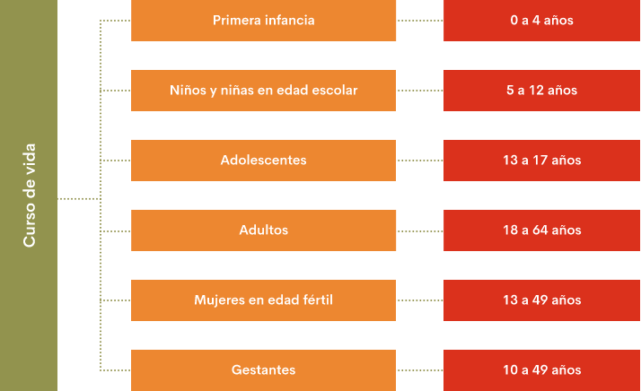

1. Nutrición por curso de vida
Bienvenido a este primer tema de nutrición por curso de vida. Para iniciar daremos respuesta algunas preguntas para ir conociendo algunos conceptos clave:
1. ¿Cuál es el enfoque por curso de vida?
Considera la salud y la nutrición como un proceso dinámico que necesita intervenciones que van más allá de las orientadas para enfermedades específicas o problemas de salud y malnutrición de un determinado grupo de edad.
2. ¿Qué tiene en cuenta el curso de vida?
Los momentos continuos de la vida y los resultados en salud nutricional de un individuo, los cuales dependen de la interacción de diferentes factores relacionados con experiencias acumulativas, situaciones influenciadas por el contexto familiar, social, económico, ambiental, cultural y de la exposición a riesgos físicos o sociales durante la gestación, infancia, adolescencia, juventud y vida adulta.
3. ¿Cómo asume el enfoque del curso de vida?
Por lo tanto, el enfoque del curso de vida asume el desarrollo de una persona como un proceso durante toda la vida y que tiene incidencia en cada uno de los individuos y en su familia.
Para profundizar sobre el concepto de curso de vida y la diferencia con ciclo de vida se puede visitar la web del Ministerio de Salud y Protección Social y revisar los documentos de la Organización Mundial de la Salud (OMS), Organización Panamericana de la Salud (OPS) o el documento ABECÉ curso de vida que se relaciona a continuación:
Anexo. ABECÉ Enfoque de Curso de Vida
Se consideran los siguientes grupos de edad dentro del curso de vida y para los cuales el país reporta los resultados de situación nutricional:

En el presente componente se centra en dos grupos de edad dentro del curso de vida, por la importancia que tienen en el patrón nutricional para todo el proceso de desarrollo y crecimiento, como son: la primera infancia y la mujer gestante. Estos dos grupos dentro del curso de vida incluyen los niños y las niñas en sus primeros 1000 días que van desde la gestación 270 días y hasta los 2 años 730 días. (OPS-OMS, 2017)
1.1 Importancia de la nutrición en la primera infancia y la gestación
En los primeros 1000 días de vida, la salud y la nutrición son la clave esencial para una futura vida sana. Este grupo de población dentro del curso de vida es vulnerable a desequilibrios e insuficiencias dietéticas y nutricionales.
Está comprobado por diferentes evidencias científicas de los efectos positivos en las intervenciones tempranas, a través de la promoción de la lactancia materna exclusiva en los primeros seis meses de vida y continuada hasta los dos años, la alimentación complementaria apropiada, la vacunación, las interacciones y el vínculo afectivo con los padres y cuidadores/as y prevención de enfermedades agudas de la infancia. (MINSALUD, 2013) [P5]
En los primeros 3 años de vida del niño o niña se forma el 80% del cerebro por lo tanto cada comida que se brinda ayuda a mejorar el proceso. En este grupo de edad el desarrollo físico, emocional y social tienen impacto directo en su progreso actual o la vida futura como adulto. Con una nutrición y alimentación saludable se evitan los problemas de malnutrición por déficit o exceso y posibles enfermedades crónicas en el futuro.

1.2. Importancia de la nutrición en la gestación
Antes de la gestación, el estado nutricional de la futura madre es importante para el futuro de los niños y niñas. Las madres que padecen desnutrición crónica son más propensas a tener hijos con bajo peso al nacer y pueden tener un crecimiento deficiente en la niñez y al llegar a la edad de procrear, dar a luz hijos desnutridos. Las mujeres mayores de 18 años que se encuentran en buen estado nutricional tienen muchas más probabilidades de sobrevivir el embarazo y de tener hijos e hijas que crezcan sanos. (UNICEF, s.f)
La alimentación durante la etapa de gestación es uno de los factores que determinan el buen estado de salud y nutrición de los niños y niñas en la vida adulta. La situación de nutrición de la mujer gestante determina un retraso en el crecimiento intrauterino, bajo peso al nacer y morbimortalidad neonatal materna durante el parto generando complicaciones durante el mismo.
2. Salud y nutrición
El Manual para facilitadores de las Guías Alimentarias Basadas en Alimentos para la población colombiana mayor de 2 años presenta conceptos básicos sobre alimentación y nutrición que ayudan a comprender mejor los contenidos de los mensajes de las Guías Alimentarias Basadas en Alimentos (GABA), facilitando el proceso de difusión y adopción para la práctica (ICBF-FAO, 2015). A continuación, presentamos algunos de ellos:
Alimentación saludable: Es aquella que ayuda a mantener un óptimo estado de salud y al realizar las actividades de la vida diaria; sus determinantes son la variedad, cantidad y calidad de alimentos.
La OMS se refiere a la alimentación saludable como aquella que logra un equilibrio energético, un peso normal, reduce el consumo de grasas, aumenta el consumo de frutas y hortalizas, así como de legumbres, cereales integrales y frutos secos que reducen el consumo de azúcares libres de sal (sodio) de toda procedencia. (ICBF-FAO, 2015)
Dietas sostenibles: Entendidas como dietas de bajo impacto ambiental que contribuyen a la seguridad alimentaria, nutricional y vida sana de las generaciones presentes o futuras. Las dietas sostenibles asisten a la protección, respeto de la biodiversidad y ecosistemas culturalmente aceptables, justos, accesibles, asequibles, nutricionalmente adecuados, inocuos y saludables que permiten la optimización de los recursos naturales y humanos. (ICBF-FAO, 2015).
Nutrición: Es el proceso involuntario por el cual el organismo humano toma de los alimentos los nutrientes que necesita para su buen funcionamiento en las distintas etapas del ciclo vital, con el fin de promover el crecimiento y desarrollo, manteniendo la salud.(ICBF-FAO, 2015).
Nutrientes: Componentes presentes en los alimentos que el cuerpo requiere para vivir, crecer y mantenerse saludable. Hay nutrientes que el cuerpo requiere en mayor cantidad, hay otros que, en menor cantidad, pero todos son indispensables para mantener la salud. Se pueden dividir en macro y micronutrientes.
Macronutrientes: Son los nutrientes que el cuerpo necesita en mayores cantidades y se dividen en carbohidratos, proteínas y grasas.
Carbohidratos: proporcionan al cuerpo la energía indispensable para funcionar y realizar las actividades diarias. Aportan 4 calorías por gramo. Los principales alimentos fuentes de carbohidratos son: cereales, raíces, tubérculos, plátanos y azúcares.
Proteínas: contribuyen a la formación de células, tejidos, órganos internos, piel, huesos, músculos y sangre. Son las responsables del crecimiento y mantenimiento del cuerpo, así mismo de la producción de hormonas, enzimas y anticuerpos. Aportan 4 calorías por gramo y provienen de dos fuentes:
- Origen animal, que se encuentran en todo tipo de carnes, en la leche y los huevos.
- Origen vegetal, que se encuentran en las leguminosas como frijoles, soya, lentejas y garbanzos. Las proteínas de origen animal son de mejor calidad que las de origen vegetal.
Grasas: son la fuente más concentrada de energía, ya que cada gramo corresponde a 9 calorías. Ayudan a la formación de hormonas y membranas, siendo indispensables para la absorción de las vitaminas liposolubles (A, D, E y K). De acuerdo a la fuente, las grasas se pueden clasificar:
- Origen animal: contenida en la manteca de cerdo, la crema de leche, la mantequilla de vaca, los embutidos, la grasa visible de la carne y la piel de las aves. Estas grasas son fuente de ácidos grasos saturados (AGS) y si se consumen en exceso tienen efectos negativos, principalmente sobre el corazón y circulación generando sobrepeso, obesidad y enfermedades asociadas.
- Origen vegetal: contenida en aceites de oliva, maíz, soya, girasol, canola, manteca vegetal y margarina. A excepción de las dos últimas que son ricas en AGS, las grasas de origen vegetal son ricas en AGI, que si se consumen con moderación ofrecen un efecto protector en el organismo, pero en exceso favorecen el sobrepeso, obesidad y enfermedades asociadas.(ICBF-FAO, 2015).
Micronutrientes: Son los nutrientes que el cuerpo necesita en menores cantidades y se dividen en:
Vitaminas: ayudan a regular las diferentes funciones del organismo. Solo las necesitamos en pequeñas cantidades, pero si no se consumen, la salud se afecta.
Las vitaminas se encuentran en casi todos los alimentos, principalmente en frutas, verduras y productos de origen animal. Hay vitaminas hidrosolubles, que se transportan o diluyen únicamente en agua y vitaminas liposolubles, que se transportan o diluyen únicamente en medio graso. (ICBF-FAO, 2015).
Minerales: al igual que las vitaminas, los minerales se necesitan en pequeñas cantidades. Forman parte de los tejidos y participan en funciones específicas del organismo. También están presentes en muchos alimentos, especialmente en los de origen animal. (ICBF-FAO, 2015).
3. Guías alimentarias basadas en alimentos para población colombiana mayor de 2 años
Las guías alimentarias son un conjunto de planteamientos que brindan orientación a la población sobre el consumo de alimentos, con el fin de promover un completo bienestar nutricional. Son dinámicas, flexibles y temporales, toman en cuenta el patrón alimentario e indican los aspectos que deben ser modificados o reforzados. (ICBF-FAO, 2015).
El principal objetivo de las guías alimentarias es contribuir al fomento de estilos de vida saludables, al control de las deficiencias o excesos en el consumo de alimentos y la reducción del riesgo de enfermedades relacionadas con la alimentación, promoviendo prácticas saludables a través de un conjunto de mensajes que brindan orientación a la población colombiana.

3.1. El plato saludable de la familia colombiana
Anexo.
Rotafolio para facilitadores
3.2 Mensajes de las GABA
De acuerdo al Instituto Colombiano de Bienestar Familiar (ICBF) y Organización de las Naciones Unidas para la Alimentación y la Agricultura (FAO) a continuación se presentan nueve mensajes GABA para la población colombiana mayor de 2 años:
1. Consuma alimentos frescos y variados como lo indica el “plato saludable de la familia Colombiana”.
2. Para favorecer la salud de músculos, huesos y dientes consuma diariamente huevo, leche u otros productos lácteos.
3. Para una buena digestión y prevenir enfermedades del corazón, incluya en cada una de las comidas frutas enteras y verduras frescas.
4. Para complementar su alimentación consuma al menos dos veces por semana leguminosas como frijol, lenteja, arveja y garbanzo.
5. Para prevenir la anemia, los niños, niñas, adolescentes y mujeres jóvenes deben comer vísceras una vez por semana.
6. Para mantener un peso saludable, reduzca el consumo de “productos de paquete”, comidas rápidas, gaseosas y bebidas azucaradas.
7. Para tener una presión arterial normal, reduzca el consumo de sal y alimentos como carnes embutidas, enlatados y “productos de paquete” altos en sodio.
8. Cuide su corazón, consuma aguacate, maní y nueces; disminuya el consumo de aceite vegetal y margarina; evite grasas de origen animal como mantequilla y manteca.
9. Por el placer de vivir saludablemente realicé actividad física de forma regular.
Para ampliar la información relacionada con el proceso de revisión y actualización de las GABA, la evidencia científica, las recomendaciones técnicas y los patrones alimentarios por grupos de edad, se puede consultar en la página web del ICBF el “Documento Técnico de las Guías alimentarias basadas en alimentos para la población colombiana mayor de 2 años” (ICBF-FAO,2015).
Anexo.
Documento Técnico de las Guías alimentarias basadas en alimentos para la población colombiana mayor de 2 años
De igual manera, el ICBF cuenta con el documento “Manual para facilitadores de las guías alimentarias basadas en alimentos para la población colombiana” y con Infografías, las cuales, contienen conceptos básicos, recomendaciones e ilustraciones de fácil manejo, ejercicios pedagógicos que ayudan a comprender y aplicar mejor los contenidos de los mensajes y el uso de los documentos de soporte facilitando el proceso de difusión y adaptación acorde a cada territorio y contexto social y cultural.
Anexo.
Manual para facilitadores de las guías alimentarias basadas en alimentos para la población colombiana.
El material está dirigido a ciudadanos con responsabilidad en acciones de educación en alimentación y nutricional, para facilitar la orientación sobre las pautas de una buena alimentación, como un paso más para mejorar la calidad de vida y bienestar de las familias colombianas.
4. Guías alimentarias basadas en alimentos para mujeres gestantes, madres en periodo de lactancia y niños y niñas menores de 2 años de Colombia
4.1. Mujeres de las GABA para mujeres gestantes:
(ICBF-FAO,2018)
4.2. Madres de las GABA para las madres en periodo de lactancia (ICBF-FAO,2018).
(ICBF-FAO,2018)
4.3. Mensajes de las GABA para niños y niñas menores de 2 años:
(ICBF-FAO,2018)
4.4 Guía para la introducción de alimentos para niños y niñas de 6 a 23 meses:
a. 6 a 8 meses
b. 9 a 11 meses
c. 12 a 23 meses
(ICBF-FAO,2018)
Para ampliar la información relacionada con el proceso de revisión y actualización de las GABA para mujeres gestantes, madres en periodo de lactancia, niños y niñas menores de 2 años, la evidencia científica, las recomendaciones técnicas y los patrones alimentarios por grupos de edad, se puede consultar las “Guías alimentarias basadas en alimentos para mujeres gestantes, madres en periodo de lactancia y niños y niñas menores de 2 años” y el documento técnico descrito en el tema anterior. (ICBF-FAO, 2018).
Infografía.
Guías alimentarias basadas en alimentos para mujeres gestantes, madres en período de lactancia y niños y niñas menores de 2 años de Colombia.
Glosario
AGI: Ácidos Grasos Insaturados
GABA:Guías Alimentarias Basadas en Alimentos
Mortalidad:es el número de muertes en una población de acuerdo a un tiempo determinado.
Morbilidad: es el índice de personas que padecen una enfermedad en una región y período determinado.
Morbimortalidad:se refiere al conjunto de enfermedades mortales que han afectado a una cantidad de personas en un tiempo y lugar determinados.
Referencias bibliográficas
Blanco, M. (2011). El enfoque del curso de vida: orígenes y desarrollo. Revista Latinoamericana de población, 5(8), 5-31.
Instituto Colombiano de Bienestar Familiar (ICBF) y Organización de las Naciones Unidas para La Alimentación y la Agricultura (FAO). (2015). Guías Alimentarias Basadas en Alimentos para la población colombiana mayor de 2 años- Documento técnico (Primera ed.). Colombia. doi:ISBN:978-92-5-308687-0
Instituto Colombiano de Bienestar Familiar (ICBF) y Organización de las Naciones Unidas para la Alimentación y la Agricultura (FAO). (2015). Guías Alimentarias Basadas en Alimentos para la población colombiana mayor de 2 años- Manual para facilitadores. (Primera ed.). Colombia. doi:ISBN: 978-92-5-308685-6
Instituto Colombiano de Bienestar Familiar (ICBF) y Organización de las Naciones Unidas para la Alimentación y la Agricultura (FAO). (2018). Guías Alimentarias Basadas en Alimentos para la población colombiana para mujeres gestantes, madres en periodo de lactancia y niños y niñas menores de 2 años de Colombia- Documento técnico (Primera ed.). Colombia. doi: ISBN: 978-958-623-194-7
Instituto Colombiano de Bienestar Familiar (ICBF) y Organización de las Naciones Unidas para la Alimentación y la Agricultura (FAO). (2018). Guías Alimentarias Basadas en Alimentos para la población colombiana para mujeres gestantes, madres en periodo de lactancia y niños y niñas menores de 2 años de Colombia- Manual para facilitadores. (Primera ed.). Colombia. doi: ISBN: 978-958-623-193-0
MINSALUD. (2013). Plan de acción de salud primeros 1000 días de vida. Colombia 2012-2021. https://www.minsalud.gov.co/sites/rid/Lists/BibliotecaDigital/RIDE/VS/PP/ENT/planeacion-primeros-mil-dias.pdf
MINSALUD. (2015). ABECÉ Enfoque de curso de vida. https://www.minsalud.gov.co/sites/rid/Lists/BibliotecaDigital/RIDE/VS/PP/ABCenfoqueCV.pdf
OPS-OMS. (2017). Salud en las Américas. Resumen: panorama regional y perfiles de país. https://www.paho.org/salud-en-las-americas-2017/wp-content/uploads/2017/09/Print-Version-Spanish.pdf
Parodi G, J.F. (2015). El Curso de Vida: renovando el enfoque y buscando oportunidades para la Salud Pública.
Fotografías y vectores tomados de https://www.shutterstock.com/ y https://www.freepik.es/
Licencia Creative Commons
CC BY-NC-SA
Ver licencia.